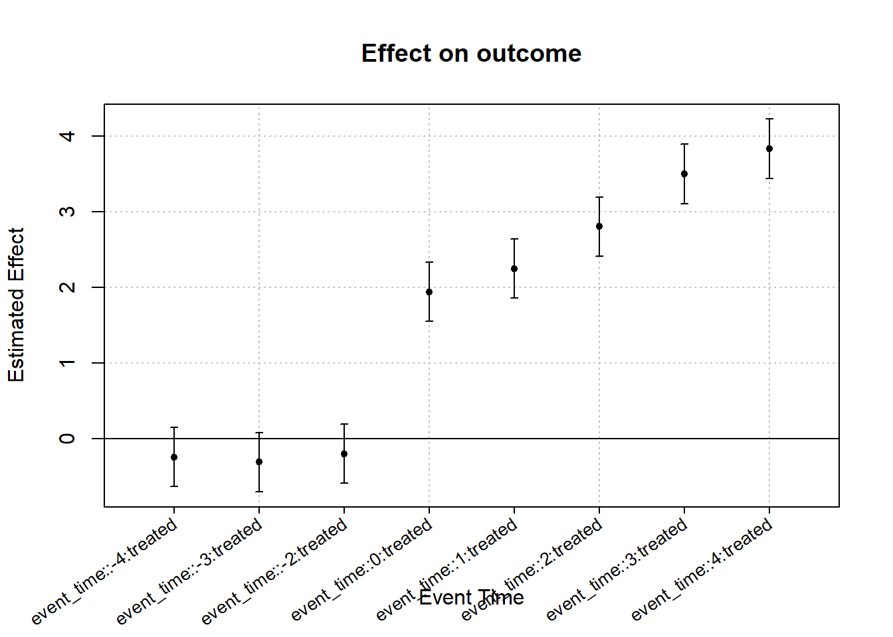

OLS estimation, Dep. Var.: outcome
Observations: 450
Fixed-effects: id: 50, time: 9
Standard-errors: IID
Estimate Std. Error t value Pr(>|t|)
event_time::-4:treated -0.244170 0.199698 -1.222693 0.22220
event_time::-3:treated -0.312603 0.199698 -1.565377 0.11832
event_time::-2:treated -0.199344 0.199698 -0.998228 0.31880
event_time::0:treated 1.939583 0.199698 9.712563 < 2.2e-16 ***
event_time::1:treated 2.246835 0.199698 11.251147 < 2.2e-16 ***
event_time::2:treated 2.800487 0.199698 14.023587 < 2.2e-16 ***
event_time::3:treated 3.496236 0.199698 17.507586 < 2.2e-16 ***
event_time::4:treated 3.829440 0.199698 19.176124 < 2.2e-16 ***
---
Signif. codes: 0 '***' 0.001 '**' 0.01 '*' 0.05 '.' 0.1 ' ' 1
RMSE: 0.461184 Adj. R2: 0.957163
Within R2: 0.75280919 Difference-in-Differences: Event Study
19.1 Motivation
While the parallel trends assumption is fundamentally untestable, event-study designs allow researchers to assess its plausibility by examining pre-treatment dynamics.
An event study extends the difference-in-differences framework by estimating dynamic treatment effects relative to the timing of the intervention.
19.2 Event Study Specification
Let \(k\) index time relative to treatment, with \(k = 0\) denoting the treatment period.
The event-study regression can be written as:
\[ Y_{it} = \alpha + \sum_{k \neq -1} \delta_k \mathbf{1}(t - T_i = k) + \mu_i + \lambda_t + u_{it} \]
where \(k = -1\) is the omitted baseline period.
Under parallel trends, the coefficients \(\delta_k\) for \(k < 0\) should be close to zero.
19.3 Simulated Panel Data
We illustrate the event-study design using simulated panel data.
19.4 Event Study Estimation
We estimate the event-study regression using indicator variables for event time.

```
19.5 Graphical Presentation of Event-Study Estimates
19.6 Interpretation
The absence of significant pre-treatment effects supports the plausibility of the parallel trends assumption.
Post-treatment coefficients trace out the dynamic causal effects of the intervention over time.